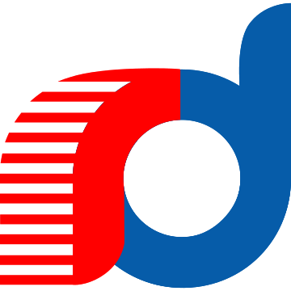

S.B Malik
X
·
LinkedIn
·
Email
·
GitHub
I use AI/ML to solve real life problems.
Work experience
2024 – now
AI Solutions Architect at
Sigrow
8 Million predictions a day.
2023 – 2025
AI/ML Consultant at

Rapidev Group
$50K saved every year.
2021 – 2024
Machine Learning Engineer at
Live video analysis on 100+ cameras at 30 frames a second.
2020 – 2021
Machine Learning Engineer at
CENTAIC (PAF)
Satellite images of 450 Million pixels.
Other achievements
2024
PyCon talk
Python and the Multiverse of Cameras, PyCon Pakistan.
2023
ar
X
iv
Research paper
Reimagining UI Design using Deep Learning, first author.
2022
Open source
ArcFace on TensorRT 8, merged into TensorRTX.
2021
Gold medal
MS Computational Science & Engineering, NUST.